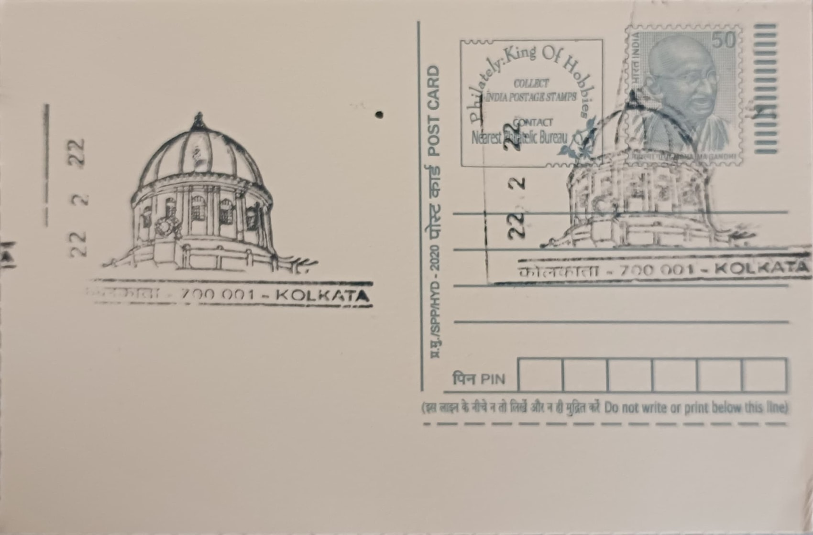

Kolkata GPO Dome
কলকাতা জিপিও গম্বুজ


The General Post Office at Kolkata stands on ground layered with history long before any postal function existed there, occupying the site of the original Fort William, the fortified East India Company settlement raised in the early eighteenth century. When the fort was relocated southward after 1757, the old site in Dalhousie Square, later renamed BBD Bagh, was freed for civic use, and it was here that colonial authorities eventually chose to erect a building commensurate with the growing administrative weight of the postal department in Bengal. The present structure, opened to the public on 2 October 1868, thus occupies a plot whose name predates the post office itself by well over a century.
As the headquarters of postal operations for the Bengal Presidency, the GPO held a position of outsized importance at a time when Kolkata served as the capital of British India, a status it retained until 1911. The building is counted among the finest surviving examples of Victorian public architecture in eastern India and functions today as a heritage structure as much as a working post office, its scale and ornamentation having been intended from the outset to project the authority of the colonial administration over a vast and commercially vital territory. Kolkata GPO also traces its institutional origins to 1774, making it one of the oldest continuously functioning post offices in the country.
Designed by Walter Granville, who served as consulting architect to the Government of India through much of the 1860s, the building was constructed between 1864 and 1868 in a Renaissance-influenced classical idiom. Its most striking feature is the high dome, rising to roughly 220 feet, carried on an octagonal drum and ringed by twenty-eight Corinthian columns, with a colonnaded facade of Ionic and Corinthian pillars running along the ground level. A large clock was fitted to the building later, in 1896, imported from the same English manufacturer responsible for the mechanism of Big Ben in London, at a reported cost of around Rs 7,000, and it remains a prominent feature of the structure's silhouette over Dalhousie Square.
A particularly grim chapter of the site's history predates the present building by over a century: an alley beside the GPO is identified as the location of the guardroom in which the Black Hole of Calcutta incident occurred in June 1756, when a large number of British prisoners were confined overnight in a small cell with heavy fatalities. A brass plate set into the staircase on the building's eastern side marks what is believed to be the easternmost surviving point of the old Fort William, making it one of the few physical traces of the original fortification left anywhere in the city.
The GPO complex also houses a postal museum, established in 1884, which displays historical philatelic material, postal artefacts and documents tracing the growth of the postal network across eastern India. The post office continues to operate as an active administrative and retail postal facility under India Post even as its colonial-era fabric is maintained as a protected heritage building, with the dome and clock tower still forming one of the most recognisable fixtures of the BBD Bagh skyline for the thousands who pass through the area daily.
| Date of Introduction | October 1, 2018 |
|---|---|
| Address | Senior Postmaster, |
| Kolkata GPO, | |
| Kolkata (dt.), West Bengal - 700001. |